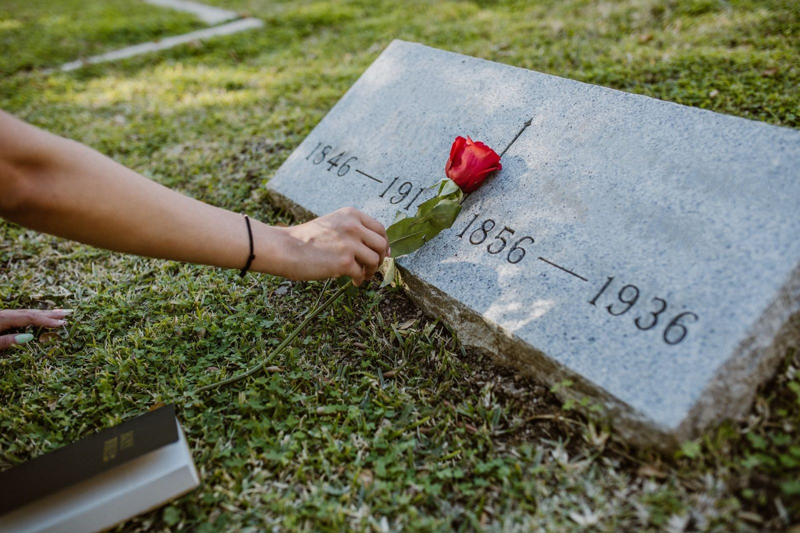
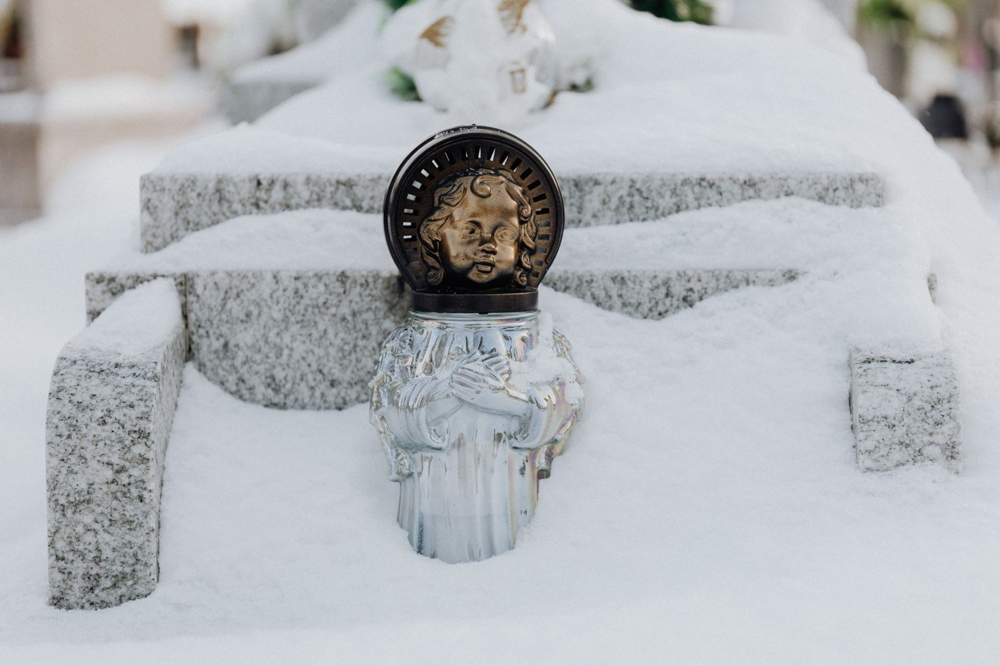
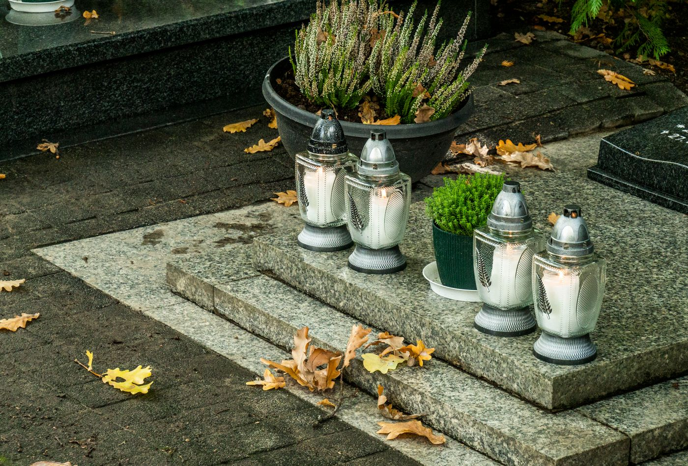

Oferta

Nagrobek pojedynczy robię od początku do końca sam: projekt z wymiarami, docięcie i polerowanie kamienia, liternictwo, na końcu montaż. Fundament zbroję i daję mu związać, dlatego pomnik stoi prosto także po latach. Na życzenie pokażę podobne prace, które już stoją na okolicznych cmentarzach.

Grób rodzinny projektuję z myślą o kolejnych pokoleniach: zostawiam miejsce na przyszłe wpisy i planuję tablice tak, żeby dało się je uzupełniać bez przeróbek całości. Rysunek dostaniesz do domu, do obejrzenia z bliskimi.

Do grobowca nikt nie wraca z poprawkami, dlatego głębokość wykopu ustalam pod liczbę planowanych pochówków. Komory muruję i zbroję pod wymiar kwatery, z odprowadzeniem wody. Płytę wierzchnią osadzam tak, żeby przy kolejnym pochówku dało się ją bezpiecznie podnieść.

Złocenia bledną, a kute litery zarastają - odnawiam jedne i drugie. Stary napis czyszczę i maluję na nowo, więc znów widać go z daleka. Drobna praca, a grób od razu wygląda na zadbany.

Stary nagrobek z lastryko też da się uratować: uzupełniam ubytki, impregnuję płytę i odnawiam litery. A jak kamień nadaje się już tylko do wymiany, mówię to wprost - nie biorę pieniędzy za renowację, która nie potrwa.
Tablice, krzyże i wazony dorabiam także do pomników, których nie stawiałem. Wystarczy zdjęcie i wymiary - dobiorę kamień możliwie blisko oryginału, a jak idealnego dopasowania nie da się uzyskać, powiem to przed zamówieniem.
Prosty, przewidywalny proces - wiesz, na czym stoisz na każdym etapie.
Opowiadasz, czego potrzebujesz, a my doradzamy najlepsze rozwiązanie.
Dostajesz jasną cenę i termin, zanim cokolwiek ruszy.
Robimy na czas i zgodnie z ustaleniami.
Napisz, co chcesz zrobić - odpowiemy z propozycją i wyceną.